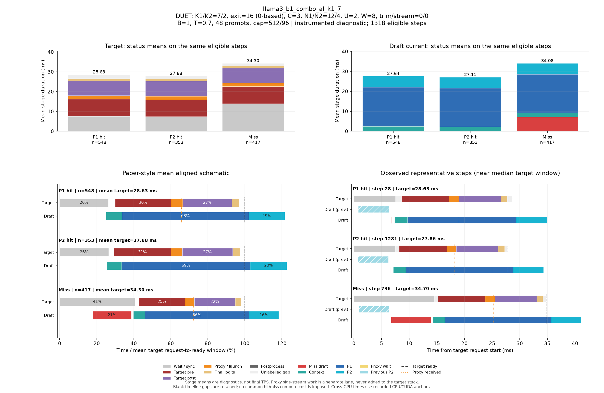

DUET: K1/K2=7/2, exit=16 (0-based), C=3, N1/N2=12/4, U=2, W=8, trim/stream=0/0
| Pass | 용도 | N | B | T | Seed | AL* | Cache hit | TPS* | Raw TPS |
|---|---|---|---|---|---|---|---|---|---|
| 0 | profile-diagnostic | 48 | 1 | 0.7 | 5100 | 2.787 | 68.68% | 80.13 | 79.61 |
Input/output cap: 512/96 · GPUs: 4,5 · draft seed: 0 · source: 69192a52972dc5f39cc698da4c6e01b55fd894b5
PNG · 벡터 PDF · 원본 결과 JSON
세부 trace: 1318 eligible steps. Target 원본 · Draft 원본
제외 수: {"initial": 19, "output_boundary": 45, "capture_or_next": 10}
왼쪽 아래는 상태별 평균 정렬 schematic, 오른쪽 아래는 실제 대표 step입니다. %의 분모는 각 상태의 평균 target request→ready 시간이며 phase overlap은 별도 lane에 표시합니다.

{
"args": {
"target": "/data/chokwans99/models/layerskip-llama3-8B",
"draft": "/home/chokwans99/models_mlsys/Qwama-0.5B-Instruct",
"mode": "duet-tree",
"batches": [
1
],
"temperatures": [
0.7
],
"seeds": [
5100
],
"target_tp": 1,
"prompts": "/home/chokwans99/PSD-mlsys-coverage/results/mlsys_coverage/round5/tuning48.json",
"limit": 0,
"max_new_tokens": 96,
"max_model_len": 2048,
"input_cap": 512,
"k1": 7,
"k2": 2,
"draft_fan_out": 2,
"proxy_fan_out": 1,
"p1_tree": true,
"p1_verify_nodes": null,
"p2_verify_nodes": null,
"exit_layer": 16,
"p1_nodes": 12,
"p2_nodes": 4,
"tree_width": 3,
"p1_roots": 2,
"p2_budget": null,
"tree_root_count": null,
"tree_beta": 0.5,
"tree_proxy_threshold": 0.01,
"tree_conf_threshold": 0.03,
"root_source": "complement",
"root_normalization": "full",
"root_overlap_mix": 0.25,
"memory_fraction": 0.45,
"ignore_eos": false,
"greedy_only": false,
"audit_preemption": false,
"ragged_limits": false,
"tree_calibration_dir": null,
"preflight_test": null,
"output": "/home/chokwans99/PSD-mlsys-coverage/results/mlsys_coverage/round5/llama3_b1_combo/llama3_b1_combo_al_k1_7.json"
},
"engine_kwargs": {
"num_gpus": 2,
"max_num_seqs": 1,
"max_model_len": 2048,
"max_num_batched_tokens": 2048,
"gpu_memory_utilization": 0.45,
"speculate": true,
"draft_async": true,
"greedy_only": false,
"jit_speculate": true,
"speculate_k": 9,
"async_fan_out": 3,
"duet_p1_tree_policy": "on",
"duet_p2_tree_policy": "on",
"draft": "/home/chokwans99/models_mlsys/Qwama-0.5B-Instruct",
"duet_enabled": true,
"duet_exit_layer": 16,
"duet_phase1_k": 7,
"duet_phase2_k": 2,
"duet_draft_fan_out": 2,
"duet_p2_tree_max_nodes": 4,
"duet_p2_tree_verify_nodes": 4,
"duet_p1_tree_max_nodes": 12,
"duet_p1_tree_verify_nodes": 12,
"duet_tree_c_tensor": 3,
"duet_p1_roots_per_position": 2,
"duet_p2_budget": null,
"duet_tree_root_count": null,
"duet_tree_beta": 0.5,
"duet_tree_proxy_threshold": 0.01,
"duet_tree_conf_threshold": 0.03,
"duet_root_source": "complement",
"duet_root_normalization": "full",
"duet_root_overlap_mix": 0.25
},
"env": {
"CUDA_VISIBLE_DEVICES": "4,5",
"SSD_CUDA_ARCH": "8.9",
"SSD_ATTN_BACKEND": "auto",
"SSD_DIST_PORT": "31215",
"OMP_NUM_THREADS": "4",
"SSD_SEED": "0",
"SSD_CHAIN_PROXY_GRAPH": "1",
"SSD_FAST_VERIFY": "1",
"SSD_BATCHED_PROXY_GRAPH": "1",
"SSD_DUET_EXIT_REPLICA": "0",
"SSD_ASYNC_PROXY_SEND": "1",
"SSD_PROXY_STREAM": "0",
"SSD_BATCHED_TREE": "1",
"SSD_TREE_EXPANSION_POLICY": "reach_gain_frontier",
"SSD_TREE_REACH_CALIBRATION": "/home/chokwans99/PSD-mlsys-coverage/results/mlsys_coverage/round4/calibration/reach.json",
"SSD_TREE_GAIN_CALIBRATION": "/home/chokwans99/PSD-mlsys-coverage/results/mlsys_coverage/round4/calibration/gain.json",
"SSD_DUET_MISS_K": "4",
"SSD_TREE_FUSED_MATH": "1",
"SSD_BATCH_TREE_BULK_EXPORT": "1",
"SSD_TREE_PARALLEL_INSERT": "0",
"SSD_PROFILE_DUET": "1",
"SSD_PROFILE_DUET_MAX_EVENTS": "100000",
"SSD_TREE_SHAPE_METRICS": "1",
"SSD_PROFILE_DIR": "/home/chokwans99/PSD-mlsys-coverage/results/mlsys_coverage/round5/profiles/llama3_b1_combo_al_k1_7",
"SSD_HF_CACHE": "/data/chokwans99/models",
"SSD_DATASET_DIR": "/home/chokwans99/PSD-mlsys-coverage/results/mlsys_coverage/round5"
},
"effective_features": {
"fast_verify": true,
"batched_proxy_graph": true,
"exit_replica": false,
"jit_speculate": true,
"duet_jit_short": true,
"miss_depth": 4,
"miss_width": 1,
"tree_fused_math": true,
"tree_parallel_insert": false,
"bulk_export": true
},
"resolved_env": {
"SSD_CUDA_ARCH": "8.9",
"SSD_ATTN_BACKEND": "auto",
"SSD_DIST_PORT": "31215",
"SSD_SEED": "0",
"SSD_CHAIN_PROXY_GRAPH": "1",
"SSD_FAST_VERIFY": "1",
"SSD_BATCHED_PROXY_GRAPH": "1",
"SSD_DUET_EXIT_REPLICA": "0",
"SSD_ASYNC_PROXY_SEND": "1",
"SSD_PROXY_STREAM": "0",
"SSD_BATCHED_TREE": "1",
"SSD_TREE_EXPANSION_POLICY": "reach_gain_frontier",
"SSD_TREE_REACH_CALIBRATION": "/home/chokwans99/PSD-mlsys-coverage/results/mlsys_coverage/round4/calibration/reach.json",
"SSD_TREE_GAIN_CALIBRATION": "/home/chokwans99/PSD-mlsys-coverage/results/mlsys_coverage/round4/calibration/gain.json",
"SSD_DUET_MISS_K": "4",
"SSD_TREE_FUSED_MATH": "1",
"SSD_BATCH_TREE_BULK_EXPORT": "1",
"SSD_TREE_PARALLEL_INSERT": "0",
"SSD_PROFILE_DUET": "1",
"SSD_PROFILE_DUET_MAX_EVENTS": "100000",
"SSD_TREE_SHAPE_METRICS": "1",
"SSD_PROFILE_DIR": "/home/chokwans99/PSD-mlsys-coverage/results/mlsys_coverage/round5/profiles/llama3_b1_combo_al_k1_7",
"SSD_HF_CACHE": "/data/chokwans99/models",
"SSD_DATASET_DIR": "/home/chokwans99/PSD-mlsys-coverage/results/mlsys_coverage/round5",
"SSD_FORCE_SPLIT_K1K2": "1",
"SSD_DUET_JIT_SHORT": "1",
"SSD_SHM_NAME": "ssd_2706969"
},
"runtime_source_sha256": {
"ssd/ssd/__init__.py": "f1a221b38f55b42ef0619cba48a411acbbd1965c4845b4643f77443b7ce77950",
"ssd/ssd/config.py": "865ddb5e09ec11f4bc8511dad3f5abad39a6ab412cf0bbcd6213179b5245fa31",
"ssd/ssd/engine/block_manager.py": "05d873619b419d31f47b4be4025bc7c9f11759f5f0bc3f65fbff3a1e8f94660a",
"ssd/ssd/engine/draft_runner.py": "8cb7e22f725de2c0d9c85912ae04f88f1674f34c0cee4b5beccc9a3b5be1c174",
"ssd/ssd/engine/helpers/batch_tree_common.py": "739feeb975c20d0adbdae51735b8983aa6cae8b59d6237b285db0c766d558f27",
"ssd/ssd/engine/helpers/batch_tree_draft.py": "f361030685350183884cc55b9058945515bb00da53fc86541f7902bfd2138528",
"ssd/ssd/engine/helpers/batch_tree_forward.py": "0c6079d2bdbf7ecc000b2a98b94b49b1942939d34ada80b15f57510de8a20940",
"ssd/ssd/engine/helpers/batch_tree_inputs.py": "c0a05d13ba0e63ecbc920425ddd6a98dc60001d93d73085e75d2d4a9b110a066",
"ssd/ssd/engine/helpers/batch_tree_roots.py": "ad3c4e772392c1043284ac4912d606543f3fd76167135b73e4f72a700e6820c7",
"ssd/ssd/engine/helpers/batch_tree_sampling.py": "ac466b59a1dab2a34e8630db347a2c8d16de3e00a526b258537a82245fbb5006",
"ssd/ssd/engine/helpers/batch_tree_verify.py": "f1258a91f3aea07be44267602808a8075769ee2e1908dad67ff49f7b1bbe811b",
"ssd/ssd/engine/helpers/batched_proxy.py": "6ed4f9b85ff8cf9c24b7ad43a1b7377d08123eeef5307366a373dacda184da86",
"ssd/ssd/engine/helpers/batched_tree_executor.py": "098d64cad2d20d96091631f6bc91da73b1e893ec400c3431a4ed68d007a9ef45",
"ssd/ssd/engine/helpers/cudagraph_helpers.py": "0436aec61d05d0b79696a48665042e364f3f4c50d853b68dc424e435b54be0c9",
"ssd/ssd/engine/helpers/e0_trace.py": "23ecd9bce2587cbef3f99c8894964c0d9642d33d372bd7be4954a5a2840a142e",
"ssd/ssd/engine/helpers/mask_helpers.py": "8ada4e709a6ab310ee920a7176b3684f89860022fc659442f6cb02ed5fb87d88",
"ssd/ssd/engine/helpers/p1_tree.py": "f48ae6b01e593d2598262b34007a6b58dde9e57e94138dde62f81d5526637398",
"ssd/ssd/engine/helpers/p2_tree.py": "73b0a512d834ab3a4608d9cd898b13b32630dd3b914b49e753c1116ac0640b41",
"ssd/ssd/engine/helpers/p2_tree_executor.py": "cfb04f959fd08baf3819a688a907cac4e3071a2727085ea08ca089b50a21e82e",
"ssd/ssd/engine/helpers/packed_tree_forward.py": "b903d6fe4d1fe18f95f6540f488acf40d469154100239429256eace61b1d7e76",
"ssd/ssd/engine/helpers/packed_verify.py": "a50ff24e93324840783b60102bfaeb3786711f05f64bd897708c779535c1820f",
"ssd/ssd/engine/helpers/root_policy.py": "4fd5cc949ee7c63db08060046bea197a62299c31af0a90990294ce39cf13a66e",
"ssd/ssd/engine/helpers/runner_helpers.py": "bfb570d8e018ee296a6c2a8c3c9e75919fd0eb1beb288ceb80121ad116419bf2",
"ssd/ssd/engine/helpers/speculate_types.py": "2929b5f3a176d04b6a4b01f092b224ad733dfda10a647bb73801cd346441ae91",
"ssd/ssd/engine/helpers/tree_expansion_policy.py": "47f818d1b8f284e56813af294723f6a934c3da0502b9ae4e611b54ba6fb85dac",
"ssd/ssd/engine/helpers/tree_fused_math.py": "930a1215363a3b6f878cbc4a71c3f59293f46aa2eab3c4938e5bb51e95868d2e",
"ssd/ssd/engine/helpers/tree_gain_allocation.py": "6f32c6a7b69272c1b42992d95c546bfd3980ccd71af3b3346e9df61977907b6a",
"ssd/ssd/engine/helpers/tree_host_topology.py": "86d0deab4da2932540a108c4c2b3560b8634837e71ba23783375c2001e4cf81c",
"ssd/ssd/engine/helpers/tree_layout.py": "4e5e47c54a4efd5a30ae8c528e1d2d9493d12aa5605c0e65c2f86ba874805be1",
"ssd/ssd/engine/helpers/tree_rerank_gpu.py": "e4a8bff8828f983d6eb407504f87f2a9edf08a1750449fe46565e661f892b734",
"ssd/ssd/engine/helpers/tree_topology_gpu.py": "3a6cf8796faabbe8adef56deedf8956c1cf252a31e0491f3b71a8544bdcf89af",
"ssd/ssd/engine/llm_engine.py": "b0081876ef6470f91fa562acc0317074a85afa9aec8322182bda7749153db00f",
"ssd/ssd/engine/model_runner.py": "5fa9e910f38538c276a151113fc490be9c75ae9af2bf35ba6eaa5513b237a421",
"ssd/ssd/engine/scheduler.py": "52a36e8bb2abc26f775562a39bd95ea6cc8c70650e6193ddaa0fad762afb8ae4",
"ssd/ssd/engine/sequence.py": "6894715ef142074b118bfa3018b10826d2748518e9c8b71291064eb99fae9bd9",
"ssd/ssd/engine/speculator_async.py": "cd16395d5e5d7380d29f5a27e1495b6a40758c0452ce2cb40d996e2c3271c114",
"ssd/ssd/engine/speculator_sync.py": "30487afa7f5027735ebd752ca1a53003f1d56350f503ea91931ef64e7aab115e",
"ssd/ssd/engine/step.py": "525d3022561c9eee96ec076032bb27e281af744feb739ddc17e52344a9cafe8f",
"ssd/ssd/engine/verifier.py": "f6795547f278628312d2dd5ab0a28e9f34489b8e6d02038566a65fa3190a0928",
"ssd/ssd/layers/activation.py": "13d88b460e7610df28c6a7c719dd8bf21c5c59ae0f85c94d505d499215618a82",
"ssd/ssd/layers/attention.py": "bbafa69d9b52dedf81542f2c3227b7f061de11c679a6681a16b0c137ccfc672b",
"ssd/ssd/layers/embed_head.py": "b896a56b908d75c8f30462b0b1a4ce634276ddb41165fdaa0220c55a2ddf7257",
"ssd/ssd/layers/fi_attn.py": "4b0a275d020c1c3ce37f4e2a6c04bff12577d6f11feec7d79959652300fc9a0c",
"ssd/ssd/layers/layernorm.py": "a076c8d2e31d2597119d8504a69afd8711b41a29b5ccb7e1bf111a6c7277400e",
"ssd/ssd/layers/linear.py": "82c096262013516c5f0a43f7c28f23aa6db6b14f52cbe1ce1dacc5f9d5c4b0b6",
"ssd/ssd/layers/rotary_embedding.py": "1bcca21cf5e4d81c11a5c55d59a6033874c4e6a0003cc4ae8e1aa6165976a723",
"ssd/ssd/layers/sampler.py": "df22591a229ae5c2f62d4797707470ebccb8e55f7064577bc24a656ed797f213",
"ssd/ssd/llm.py": "496950f31428f674b70e8e137e029aa16dd82fdc8d8b8cc76f9ebdce86f7f653",
"ssd/ssd/models/eagle3_draft_llama3.py": "0d6e713a419cf884fc85984f9a2a6de520119032075a7c99158e0df7e2faca84",
"ssd/ssd/models/llama3.py": "ac801bd73e999f04a6fc862ca1d49bc94c88315456cfb6cb1215a503bcc5e07d",
"ssd/ssd/models/qwen2.py": "6804e3662a173368632e5f05b9893cc0cd28a61ac9bd25dbe8cd6f387ca0d1ca",
"ssd/ssd/models/qwen3.py": "535495bf69933fd9c677275453b801189e2c3c78a94fcc5133fc65b88c9f69c7",
"ssd/ssd/paths.py": "72c52420daaf6d457c60235617efc3f8b1e3ae208a35f3bc45438adc9d7e01ac",
"ssd/ssd/quant/__init__.py": "a69f0de0a516ba2bf9e13680b75b8f5d538c2eb281b095662ed1515f8b0f8698",
"ssd/ssd/quant/adapter.py": "fbb1ce4a198a585c31b0102555d1f84d18b09b0de1b90a5808d93ec8ff7ac271",
"ssd/ssd/quant/awq_calibrate.py": "116807eca0a3e4e001aa24a3344031416e4060a6c1b2e39f59829fba09484126",
"ssd/ssd/quant/build.py": "37f9c72ac69af213f2720c86faf380b8a46baaad0b98bf5f2e3c7fa9b3fbc43c",
"ssd/ssd/quant/config.py": "080c327b2297d0905f8fddc8d994aa7b9dc1086d7703d951471d48cea8723a1d",
"ssd/ssd/quant/importer.py": "c8990b69bc9e4e152e7e80b7f08f273c6a4652c1f7e95a8247f85e50030f4f92",
"ssd/ssd/quant/init_context.py": "6aa3dc3f6e95d8902fa7244d0010110b6fcf1ffdccedd6eaa389204339fc214f",
"ssd/ssd/quant/io.py": "f44f98a57351ff1063b7423d2f8390a565a30796fd6c3beaeaa8825f906e66b5",
"ssd/ssd/quant/loader.py": "14f901b1f53a3650be7eff497f626469e2b1fbc487202c639d33c8dd4c9047fb",
"ssd/ssd/quant/marlin.py": "4f1996e9f63d7109e92a3a7ec5350069ba67d7659f2149e99b84ca3c6626b241",
"ssd/ssd/quant/marlin_utils.py": "f64ec8d7ec8260556abd21e229567971a928882f14b93d288a6732d55c12fc90",
"ssd/ssd/quant/naming.py": "7ba73900af5e6d6fa2d1907bd2611625fc72f28a1fb9ea4834cd9a45901632d6",
"ssd/ssd/quant/pack.py": "b7dd683b7cdbfbb6f4ce1e13a51a72240a8dc3a35b7ed652dc664d26bb384711",
"ssd/ssd/quant/state.py": "82cb1050a3b1776765df7ad8f6c59c23a86ac8d1d4cc3c974cded7f8e762f806",
"ssd/ssd/sampling_params.py": "7f79868c4ca115bb18e017411a6c5545f354aa858aa0b8076aafb756d0785032",
"ssd/ssd/utils/async_helpers/async_spec_helpers.py": "0d70779098c5051fcba5d3add5ff0b7896139f1b7789babe701a8df6eaa40f24",
"ssd/ssd/utils/async_helpers/duet_policy.py": "1fb3e1ec1c41a9cda5f531f8c732b09145c7d87ea79d74c331b8176f11f22aaf",
"ssd/ssd/utils/async_helpers/nccl_pack.py": "6330e785f3e81acffe25a82061d3098f7834ad3c2d07bb071d79ed9923b18dc1",
"ssd/ssd/utils/async_helpers/tests.py": "6491ced36a2a6f06d8cf411204b1190d2ca0bc700cd0becf79c3f4cd8abcd87e",
"ssd/ssd/utils/context.py": "ce55eb45f00c91412946dd1c96f5c8f972372dd4c8069770c48e120773f301fc",
"ssd/ssd/utils/int8_debug.py": "9a71dbf2b997a9c8d9b776cc3659c8dbf32ce5411eb5cedb4a73368cee60d3d7",
"ssd/ssd/utils/loader.py": "c008eac34810772e8d9f51da896c00867481f3e1a0e6f725e0d06599c0aab59e",
"ssd/ssd/utils/misc.py": "1084b630f174d651b78b01c4ba2dff147f18d3cf52a200704b4b9eab2b72b66c",
"ssd/ssd/utils/quantize.py": "c0ee73d55f3781eba88007325d5e9e53e66ad952e0e8f19143aa8c50bc39f406",
"ssd/ssd/utils/verify.py": "0cf11b9ba19a73e9c39087fccde43071464c6f3b964e00081ebadc747ef142a4",
"ssd/ssd/utils/verify_fast.py": "23b05b7e5032fe72c8f2ef5bd7a69aa874818b08b52ea7fc0344a54c76ea28d9",
"ssd/bench/mlsys_campaign.py": "059b6316ba33e867e1fcf099a8180c186fa70b916692eca386d2a4a347b0f26f",
"ssd/bench/mlsys_coverage.py": "70b2afaf05bbbd5760c2a4f96f801976479209ca1d7a8f9eb8598139e686bdbc",
"ssd/bench/mlsys_greedy_audit.py": "b9815fd03ded7f30f7c0408629782156e73f5ceaab9f0b3b720956f5c00da141",
"ssd/bench/mlsys_preemption_audit.py": "f891ff5a69a59fb8c93e7952f9d48ac16adb7fef074763089f14d4505ecad80d",
"ssd/bench/mlsys_summarize.py": "0235aa2b56eb59c41c429351d77e90e16c52ccdf58c43e3578dd03df0f6095bd",
"ssd/bench/mlsys_tree_observer.py": "8c18248c9ef1953e2e821613099f14d155978540536939288d4fb2aa897c6263",
"ssd/bench/mlsys_verify_bench.py": "3ddc36197874d239f41a1c135570d4d7a0940d615d3d396299bae46e377bce2e"
}
}{
"groups": [
{
"status": "P1 hit",
"n": 548,
"mean_target_ms": 28.62602558449237,
"mean_decode_ms": 28.668529151796097,
"mean_intervals": [
{
"lane": "Draft current",
"label": "Context",
"start": 7.1901626273663375,
"end": 9.614111046286395
},
{
"lane": "Draft current",
"label": "Miss draft",
"start": 6.650201080489333,
"end": 6.691197973533268
},
{
"lane": "Draft current",
"label": "P1",
"start": 9.636841053945306,
"end": 29.241374231603025
},
{
"lane": "Draft current",
"label": "P2",
"start": 29.246602769750748,
"end": 34.81844960033459
},
{
"lane": "Draft current",
"label": "Proxy wait",
"start": 29.243005709056437,
"end": 29.244945449550656
},
{
"lane": "Target",
"label": "Final logits",
"start": 26.63527973159386,
"end": 27.757263643898234
},
{
"lane": "Target",
"label": "Postprocess",
"start": 28.60631522209975,
"end": 28.62602558449237
},
{
"lane": "Target",
"label": "Proxy / launch",
"start": 17.223895672028952,
"end": 19.020356345785796
},
{
"lane": "Target",
"label": "Target post",
"start": 19.022361146272534,
"end": 26.633368493866747
},
{
"lane": "Target",
"label": "Target pre",
"start": 8.575502733244512,
"end": 17.221917607923494
},
{
"lane": "Target",
"label": "Wait / sync",
"start": 0.0,
"end": 7.522983123351188
}
],
"components": [
{
"lane": "Draft current",
"label": "Context",
"mean_ms": 2.4239484189200575,
"present_steps": 548,
"population": 548
},
{
"lane": "Draft current",
"label": "Miss draft",
"mean_ms": 0.040996893043935737,
"present_steps": 548,
"population": 548
},
{
"lane": "Draft current",
"label": "P1",
"mean_ms": 19.604533177657718,
"present_steps": 548,
"population": 548
},
{
"lane": "Draft current",
"label": "P2",
"mean_ms": 5.571846830583837,
"present_steps": 548,
"population": 548
},
{
"lane": "Draft current",
"label": "Proxy wait",
"mean_ms": 0.0019397404942199262,
"present_steps": 548,
"population": 548
},
{
"lane": "Target",
"label": "Final logits",
"mean_ms": 1.12198391230437,
"present_steps": 548,
"population": 548
},
{
"lane": "Target",
"label": "Postprocess",
"mean_ms": 0.01971036239262045,
"present_steps": 548,
"population": 548
},
{
"lane": "Target",
"label": "Proxy / launch",
"mean_ms": 1.7964606737568432,
"present_steps": 548,
"population": 548
},
{
"lane": "Target",
"label": "Target post",
"mean_ms": 7.611007347594213,
"present_steps": 548,
"population": 548
},
{
"lane": "Target",
"label": "Target pre",
"mean_ms": 8.64641487467898,
"present_steps": 548,
"population": 548
},
{
"lane": "Target",
"label": "Unlabelled gap",
"mean_ms": 1.9074652904141558,
"present_steps": 548,
"population": 548
},
{
"lane": "Target",
"label": "Wait / sync",
"mean_ms": 7.522983123351188,
"present_steps": 548,
"population": 548
}
],
"mean_markers": {
"Final logits": 27.757263643898234,
"Target ready": 28.62602558449237,
"Proxy received": 18.85802175876868
},
"representative": {
"step_id": 28,
"status": "P1 hit",
"target_ms": 28.63232398033142,
"decode_ms": 28.67300109937787,
"source_counts": {
"1": 1
},
"physical_queries": 13,
"max_valid_nodes": 12,
"unlabelled_target_ms": 1.9370129108428955,
"intervals": [
{
"label": "Wait / sync",
"start": 0.0,
"end": 7.52099609375,
"lane": "Target",
"original_label": "target_spec_wait"
},
{
"label": "Target pre",
"start": 8.570801019668579,
"end": 17.203125,
"lane": "Target",
"original_label": "batch_target_pre"
},
{
"label": "Proxy / launch",
"start": 17.205567121505737,
"end": 19.00341820716858,
"lane": "Target",
"original_label": "batch_target_proxy"
},
{
"label": "Target post",
"start": 19.00537109375,
"end": 26.60791015625,
"lane": "Target",
"original_label": "batch_target_post"
},
{
"label": "Final logits",
"start": 26.608887195587158,
"end": 27.731934070587158,
"lane": "Target",
"original_label": "batch_target_final_logits"
},
{
"label": "Postprocess",
"start": 28.613770008087158,
"end": 28.63232398033142,
"lane": "Target",
"original_label": "target_postprocess"
},
{
"label": "Unlabelled gap",
"start": 7.52099609375,
"end": 8.570801019668579,
"lane": "Target",
"original_label": "derived_gap"
},
{
"label": "Unlabelled gap",
"start": 17.203125,
"end": 17.205567121505737,
"lane": "Target",
"original_label": "derived_gap"
},
{
"label": "Unlabelled gap",
"start": 19.00341820716858,
"end": 19.00537109375,
"lane": "Target",
"original_label": "derived_gap"
},
{
"label": "Unlabelled gap",
"start": 26.60791015625,
"end": 26.608887195587158,
"lane": "Target",
"original_label": "derived_gap"
},
{
"label": "Unlabelled gap",
"start": 27.731934070587158,
"end": 28.613770008087158,
"lane": "Target",
"original_label": "derived_gap"
},
{
"label": "Miss draft",
"start": 6.786410093307495,
"end": 6.828402996063232,
"lane": "Draft current",
"original_label": "batch_miss_draft"
},
{
"label": "Context",
"start": 7.326938152313232,
"end": 9.710726976394653,
"lane": "Draft current",
"original_label": "batch_glue"
},
{
"label": "P1",
"start": 9.732211112976074,
"end": 29.312288999557495,
"lane": "Draft current",
"original_label": "batch_p1_total"
},
{
"label": "Proxy wait",
"start": 29.313266038894653,
"end": 29.315219163894653,
"lane": "Draft current",
"original_label": "batch_proxy_wait"
},
{
"label": "P2",
"start": 29.317172050476074,
"end": 34.96268010139465,
"lane": "Draft current",
"original_label": "batch_p2_total"
}
],
"previous": [
{
"label": "Previous P2",
"start": 0.7844572067260742,
"end": 6.283481121063232,
"lane": "Draft previous",
"original_label": "batch_p2_total"
}
],
"markers": {
"Target ready": 28.63232398033142,
"Final logits": 27.731934070587158,
"Proxy received": 18.994418144226074
}
},
"step_ids": [
22,
23,
25,
28,
30,
34,
35,
38,
42,
44,
45,
46,
47,
48,
49,
53,
57,
59,
61,
63,
64,
65,
66,
71,
72,
75,
78,
80,
81,
86,
89,
91,
94,
99,
101,
103,
105,
111,
114,
115,
120,
121,
123,
124,
127,
129,
130,
132,
133,
134,
135,
136,
137,
140,
143,
144,
148,
150,
151,
157,
161,
162,
165,
169,
172,
180,
182,
183,
184,
185,
187,
191,
194,
195,
198,
202,
205,
206,
207,
210,
217,
219,
220,
222,
223,
224,
226,
227,
229,
231,
232,
235,
238,
239,
241,
243,
245,
249,
250,
254,
261,
263,
267,
268,
272,
273,
276,
278,
281,
286,
288,
295,
297,
300,
302,
304,
310,
313,
318,
320,
324,
325,
326,
327,
329,
331,
333,
338,
339,
342,
347,
350,
355,
356,
357,
358,
360,
361,
362,
372,
376,
377,
378,
379,
381,
384,
387,
388,
390,
391,
395,
397,
399,
401,
412,
413,
419,
424,
428,
430,
434,
438,
443,
447,
450,
451,
452,
453,
455,
458,
459,
460,
461,
462,
463,
464,
466,
470,
471,
472,
476,
488,
490,
496,
502,
503,
504,
505,
506,
509,
517,
523,
530,
533,
536,
537,
539,
541,
542,
544,
546,
548,
550,
551,
556,
565,
567,
570,
573,
574,
576,
578,
580,
583,
584,
587,
589,
591,
592,
597,
598,
599,
601,
609,
610,
612,
614,
615,
618,
622,
626,
633,
634,
635,
636,
637,
638,
639,
640,
641,
642,
643,
647,
649,
651,
652,
653,
654,
655,
656,
658,
659,
663,
665,
669,
670,
674,
679,
684,
685,
686,
689,
692,
694,
697,
698,
699,
700,
702,
703,
704,
706,
708,
710,
712,
713,
720,
728,
730,
731,
732,
739,
740,
741,
742,
743,
745,
747,
754,
757,
760,
762,
765,
769,
771,
772,
774,
777,
780,
781,
785,
787,
789,
795,
798,
801,
802,
810,
812,
814,
826,
827,
829,
831,
834,
835,
838,
839,
842,
843,
845,
847,
848,
850,
855,
856,
859,
860,
862,
863,
864,
865,
866,
867,
873,
878,
880,
883,
886,
887,
889,
895,
897,
898,
900,
902,
904,
905,
908,
909,
911,
912,
917,
919,
922,
925,
927,
932,
934,
936,
939,
940,
941,
942,
943,
944,
945,
947,
951,
952,
954,
956,
957,
958,
960,
961,
963,
966,
968,
971,
972,
973,
974,
978,
986,
987,
989,
994,
995,
1002,
1003,
1005,
1006,
1007,
1008,
1009,
1010,
1015,
1021,
1022,
1029,
1030,
1033,
1035,
1037,
1038,
1041,
1043,
1051,
1054,
1055,
1056,
1057,
1058,
1060,
1063,
1065,
1067,
1069,
1072,
1073,
1074,
1075,
1078,
1079,
1085,
1086,
1087,
1089,
1092,
1094,
1095,
1096,
1097,
1098,
1099,
1100,
1101,
1104,
1105,
1109,
1110,
1113,
1115,
1116,
1117,
1118,
1121,
1128,
1129,
1132,
1133,
1135,
1137,
1138,
1140,
1146,
1149,
1152,
1154,
1161,
1165,
1167,
1170,
1172,
1179,
1184,
1186,
1187,
1190,
1195,
1197,
1201,
1208,
1209,
1211,
1215,
1219,
1221,
1225,
1227,
1235,
1236,
1240,
1241,
1243,
1245,
1248,
1249,
1251,
1253,
1255,
1256,
1257,
1258,
1264,
1267,
1274,
1280,
1283,
1287,
1288,
1290,
1292,
1293,
1294,
1297,
1298,
1299,
1300,
1301,
1307,
1312,
1314,
1322,
1327,
1329,
1333,
1334,
1335,
1338,
1341,
1342,
1343,
1349,
1352,
1353,
1354,
1356,
1358,
1361,
1364,
1368,
1371,
1374,
1375,
1379,
1380,
1381,
1382,
1383,
1384,
1386,
1387,
1388,
1389,
1390,
1391
],
"query_shapes": {
"13": 531,
"8": 17
}
},
{
"status": "P2 hit",
"n": 353,
"mean_target_ms": 27.880090231260564,
"mean_decode_ms": 27.923493799107103,
"mean_intervals": [
{
"lane": "Draft current",
"label": "Context",
"start": 7.1026310299341135,
"end": 9.304383864146116
},
{
"lane": "Draft current",
"label": "Miss draft",
"start": 6.653469002618331,
"end": 6.694032297593676
},
{
"lane": "Draft current",
"label": "P1",
"start": 9.326806082603952,
"end": 28.69967310286784
},
{
"lane": "Draft current",
"label": "P2",
"start": 28.704939120214316,
"end": 34.19760519114162
},
{
"lane": "Draft current",
"label": "Proxy wait",
"start": 28.701460256792668,
"end": 28.703147824019954
},
{
"lane": "Target",
"label": "Final logits",
"start": 26.024564842326782,
"end": 27.14013806686185
},
{
"lane": "Target",
"label": "Postprocess",
"start": 27.86064891166795,
"end": 27.880090231260564
},
{
"lane": "Target",
"label": "Proxy / launch",
"start": 16.75230445605162,
"end": 18.45613625772276
},
{
"lane": "Target",
"label": "Target post",
"start": 18.458143338940975,
"end": 26.02255775908235
},
{
"lane": "Target",
"label": "Target pre",
"start": 8.162968334327676,
"end": 16.750282176155544
},
{
"lane": "Target",
"label": "Wait / sync",
"start": 0.0,
"end": 7.381550975967062
}
],
"components": [
{
"lane": "Draft current",
"label": "Context",
"mean_ms": 2.2017528342120034,
"present_steps": 353,
"population": 353
},
{
"lane": "Draft current",
"label": "Miss draft",
"mean_ms": 0.0405632949753456,
"present_steps": 353,
"population": 353
},
{
"lane": "Draft current",
"label": "P1",
"mean_ms": 19.37286702026389,
"present_steps": 353,
"population": 353
},
{
"lane": "Draft current",
"label": "P2",
"mean_ms": 5.492666070927304,
"present_steps": 353,
"population": 353
},
{
"lane": "Draft current",
"label": "Proxy wait",
"mean_ms": 0.0016875672272852393,
"present_steps": 353,
"population": 353
},
{
"lane": "Target",
"label": "Final logits",
"mean_ms": 1.1155732245350694,
"present_steps": 353,
"population": 353
},
{
"lane": "Target",
"label": "Postprocess",
"mean_ms": 0.019441319592613675,
"present_steps": 353,
"population": 353
},
{
"lane": "Target",
"label": "Proxy / launch",
"mean_ms": 1.7038318016711442,
"present_steps": 353,
"population": 353
},
{
"lane": "Target",
"label": "Target post",
"mean_ms": 7.564414420141377,
"present_steps": 353,
"population": 353
},
{
"lane": "Target",
"label": "Target pre",
"mean_ms": 8.587313841827868,
"present_steps": 353,
"population": 353
},
{
"lane": "Target",
"label": "Unlabelled gap",
"mean_ms": 1.5079646475254307,
"present_steps": 353,
"population": 353
},
{
"lane": "Target",
"label": "Wait / sync",
"mean_ms": 7.381550975967062,
"present_steps": 353,
"population": 353
}
],
"mean_markers": {
"Final logits": 27.14013806686185,
"Target ready": 27.880090231260564,
"Proxy received": 18.304242787212555
},
"representative": {
"step_id": 1281,
"status": "P2 hit",
"target_ms": 27.86328101158142,
"decode_ms": 27.9060669708997,
"source_counts": {
"2": 1
},
"physical_queries": 8,
"max_valid_nodes": 4,
"unlabelled_target_ms": 1.339843988418579,
"intervals": [
{
"label": "Wait / sync",
"start": 0.0,
"end": 7.496093034744263,
"lane": "Target",
"original_label": "target_spec_wait"
},
{
"label": "Target pre",
"start": 8.207031011581421,
"end": 16.81640601158142,
"lane": "Target",
"original_label": "batch_target_pre"
},
{
"label": "Proxy / launch",
"start": 16.81640601158142,
"end": 18.51953101158142,
"lane": "Target",
"original_label": "batch_target_proxy"
},
{
"label": "Target post",
"start": 18.523437023162842,
"end": 26.105468034744263,
"lane": "Target",
"original_label": "batch_target_post"
},
{
"label": "Final logits",
"start": 26.105468034744263,
"end": 27.22265601158142,
"lane": "Target",
"original_label": "batch_target_final_logits"
},
{
"label": "Postprocess",
"start": 27.84765601158142,
"end": 27.86328101158142,
"lane": "Target",
"original_label": "target_postprocess"
},
{
"label": "Unlabelled gap",
"start": 7.496093034744263,
"end": 8.207031011581421,
"lane": "Target",
"original_label": "derived_gap"
},
{
"label": "Unlabelled gap",
"start": 18.51953101158142,
"end": 18.523437023162842,
"lane": "Target",
"original_label": "derived_gap"
},
{
"label": "Unlabelled gap",
"start": 27.22265601158142,
"end": 27.84765601158142,
"lane": "Target",
"original_label": "derived_gap"
},
{
"label": "Miss draft",
"start": 6.654085874557495,
"end": 6.697053909301758,
"lane": "Draft current",
"original_label": "batch_miss_draft"
},
{
"label": "Context",
"start": 7.115022897720337,
"end": 9.368928909301758,
"lane": "Draft current",
"original_label": "batch_glue"
},
{
"label": "P1",
"start": 9.388460874557495,
"end": 28.786897897720337,
"lane": "Draft current",
"original_label": "batch_p1_total"
},
{
"label": "Proxy wait",
"start": 28.786897897720337,
"end": 28.790803909301758,
"lane": "Draft current",
"original_label": "batch_proxy_wait"
},
{
"label": "P2",
"start": 28.790803909301758,
"end": 34.294710874557495,
"lane": "Draft current",
"original_label": "batch_p2_total"
}
],
"previous": [
{
"label": "Previous P2",
"start": 0.6931478977203369,
"end": 6.251741886138916,
"lane": "Draft previous",
"original_label": "batch_p2_total"
}
],
"markers": {
"Target ready": 27.86328101158142,
"Final logits": 27.22265601158142,
"Proxy received": 18.243928909301758
}
},
"step_ids": [
21,
27,
31,
32,
33,
37,
51,
52,
54,
55,
56,
58,
60,
68,
73,
74,
76,
77,
82,
83,
84,
90,
93,
95,
97,
100,
104,
107,
110,
112,
118,
125,
126,
141,
145,
152,
154,
155,
159,
160,
163,
166,
167,
168,
170,
175,
176,
177,
178,
181,
193,
196,
197,
199,
201,
203,
204,
215,
221,
228,
230,
233,
236,
237,
242,
248,
251,
253,
255,
259,
260,
264,
265,
270,
271,
275,
277,
279,
284,
289,
290,
291,
292,
293,
305,
306,
308,
309,
311,
312,
314,
316,
321,
330,
332,
334,
335,
337,
341,
353,
359,
364,
370,
371,
375,
382,
383,
386,
389,
392,
393,
394,
396,
398,
405,
410,
411,
414,
415,
420,
425,
427,
429,
432,
433,
436,
437,
440,
441,
442,
444,
445,
456,
457,
465,
474,
475,
477,
478,
479,
480,
485,
489,
493,
495,
497,
500,
501,
507,
508,
510,
515,
521,
522,
526,
527,
529,
532,
538,
547,
549,
553,
560,
561,
566,
575,
577,
581,
585,
588,
596,
611,
613,
616,
619,
620,
624,
648,
661,
662,
667,
668,
673,
675,
676,
678,
683,
687,
691,
696,
701,
705,
717,
718,
719,
721,
722,
723,
726,
729,
735,
738,
746,
755,
761,
778,
779,
786,
788,
790,
793,
796,
797,
804,
805,
817,
823,
824,
825,
828,
830,
836,
840,
841,
844,
849,
851,
857,
881,
882,
884,
885,
888,
892,
893,
894,
896,
903,
907,
913,
918,
920,
921,
923,
924,
926,
930,
931,
946,
950,
959,
964,
969,
970,
975,
977,
980,
982,
990,
992,
997,
998,
1001,
1019,
1025,
1026,
1027,
1031,
1032,
1042,
1044,
1059,
1061,
1062,
1066,
1068,
1070,
1071,
1083,
1084,
1088,
1090,
1091,
1093,
1102,
1111,
1112,
1119,
1120,
1123,
1126,
1127,
1139,
1145,
1150,
1153,
1158,
1160,
1163,
1169,
1173,
1174,
1176,
1177,
1178,
1180,
1181,
1189,
1194,
1198,
1200,
1202,
1205,
1207,
1210,
1214,
1216,
1218,
1226,
1238,
1242,
1247,
1250,
1262,
1263,
1269,
1270,
1272,
1276,
1278,
1279,
1281,
1282,
1285,
1286,
1303,
1304,
1306,
1310,
1313,
1316,
1319,
1321,
1324,
1325,
1328,
1336,
1340,
1357,
1366,
1372,
1373,
1385
],
"query_shapes": {
"8": 353
}
},
{
"status": "Miss",
"n": 417,
"mean_target_ms": 34.29809395014811,
"mean_decode_ms": 34.34465316847878,
"mean_intervals": [
{
"lane": "Draft current",
"label": "Context",
"start": 13.65940550019701,
"end": 15.78060582101488
},
{
"lane": "Draft current",
"label": "Miss draft",
"start": 6.1079872683655445,
"end": 13.273710162233677
},
{
"lane": "Draft current",
"label": "P1",
"start": 15.782983996027665,
"end": 35.07683796848325
},
{
"lane": "Draft current",
"label": "P2",
"start": 35.08206619232964,
"end": 40.58082851288702
},
{
"lane": "Draft current",
"label": "Proxy wait",
"start": 35.07861896041486,
"end": 35.080384738725435
},
{
"lane": "Target",
"label": "Final logits",
"start": 32.518361506702234,
"end": 33.63415089099527
},
{
"lane": "Target",
"label": "Postprocess",
"start": 34.27883085872915,
"end": 34.29809395014811
},
{
"lane": "Target",
"label": "Proxy / launch",
"start": 23.236958102928362,
"end": 24.942649799571047
},
{
"lane": "Target",
"label": "Target post",
"start": 24.94455257937205,
"end": 32.516269054344235
},
{
"lane": "Target",
"label": "Target pre",
"start": 14.638420147861508,
"end": 23.23489723502875
},
{
"lane": "Target",
"label": "Wait / sync",
"start": 0.0,
"end": 13.936043377402875
}
],
"components": [
{
"lane": "Draft current",
"label": "Context",
"mean_ms": 2.1212003208178696,
"present_steps": 417,
"population": 417
},
{
"lane": "Draft current",
"label": "Miss draft",
"mean_ms": 7.165722893868133,
"present_steps": 417,
"population": 417
},
{
"lane": "Draft current",
"label": "P1",
"mean_ms": 19.29385397245558,
"present_steps": 417,
"population": 417
},
{
"lane": "Draft current",
"label": "P2",
"mean_ms": 5.498762320557373,
"present_steps": 417,
"population": 417
},
{
"lane": "Draft current",
"label": "Proxy wait",
"mean_ms": 0.0017657783105790759,
"present_steps": 417,
"population": 417
},
{
"lane": "Target",
"label": "Final logits",
"mean_ms": 1.1157893842930415,
"present_steps": 417,
"population": 417
},
{
"lane": "Target",
"label": "Postprocess",
"mean_ms": 0.01926309141895468,
"present_steps": 417,
"population": 417
},
{
"lane": "Target",
"label": "Proxy / launch",
"mean_ms": 1.7056916966426858,
"present_steps": 417,
"population": 417
},
{
"lane": "Target",
"label": "Target post",
"mean_ms": 7.571716474972183,
"present_steps": 417,
"population": 417
},
{
"lane": "Target",
"label": "Target pre",
"mean_ms": 8.59647708716724,
"present_steps": 417,
"population": 417
},
{
"lane": "Target",
"label": "Unlabelled gap",
"mean_ms": 1.3531128382511277,
"present_steps": 417,
"population": 417
},
{
"lane": "Target",
"label": "Wait / sync",
"mean_ms": 13.936043377402875,
"present_steps": 417,
"population": 417
}
],
"mean_markers": {
"Final logits": 33.63415089099527,
"Target ready": 34.29809395014811,
"Proxy received": 24.776286241247785
},
"representative": {
"step_id": 736,
"status": "Miss",
"target_ms": 34.78906202316284,
"decode_ms": 34.82893295586109,
"source_counts": {
"0": 1
},
"physical_queries": 8,
"max_valid_nodes": 4,
"unlabelled_target_ms": 1.246093988418579,
"intervals": [
{
"label": "Wait / sync",
"start": 0.0,
"end": 14.542968034744263,
"lane": "Target",
"original_label": "target_spec_wait"
},
{
"label": "Target pre",
"start": 15.167968034744263,
"end": 23.75390601158142,
"lane": "Target",
"original_label": "batch_target_pre"
},
{
"label": "Proxy / launch",
"start": 23.75390601158142,
"end": 25.460937023162842,
"lane": "Target",
"original_label": "batch_target_proxy"
},
{
"label": "Target post",
"start": 25.460937023162842,
"end": 33.03515601158142,
"lane": "Target",
"original_label": "batch_target_post"
},
{
"label": "Final logits",
"start": 33.03515601158142,
"end": 34.15234303474426,
"lane": "Target",
"original_label": "batch_target_final_logits"
},
{
"label": "Postprocess",
"start": 34.77343702316284,
"end": 34.78906202316284,
"lane": "Target",
"original_label": "target_postprocess"
},
{
"label": "Unlabelled gap",
"start": 14.542968034744263,
"end": 15.167968034744263,
"lane": "Target",
"original_label": "derived_gap"
},
{
"label": "Unlabelled gap",
"start": 34.15234303474426,
"end": 34.77343702316284,
"lane": "Target",
"original_label": "derived_gap"
},
{
"label": "Miss draft",
"start": 6.740022897720337,
"end": 13.923616886138916,
"lane": "Draft current",
"original_label": "batch_miss_draft"
},
{
"label": "Context",
"start": 14.259553909301758,
"end": 16.415803909301758,
"lane": "Draft current",
"original_label": "batch_glue"
},
{
"label": "P1",
"start": 16.415803909301758,
"end": 35.673616886138916,
"lane": "Draft current",
"original_label": "batch_p1_total"
},
{
"label": "Proxy wait",
"start": 35.673616886138916,
"end": 35.67752289772034,
"lane": "Draft current",
"original_label": "batch_proxy_wait"
},
{
"label": "P2",
"start": 35.67752289772034,
"end": 41.06814789772034,
"lane": "Draft current",
"original_label": "batch_p2_total"
}
],
"previous": [
{
"label": "Previous P2",
"start": 0.9001789093017578,
"end": 6.380647897720337,
"lane": "Draft previous",
"original_label": "batch_p2_total"
}
],
"markers": {
"Target ready": 34.78906202316284,
"Final logits": 34.15234303474426,
"Proxy received": 25.282991886138916
}
},
"step_ids": [
20,
24,
26,
29,
36,
39,
41,
43,
50,
62,
67,
70,
79,
85,
87,
88,
92,
96,
98,
102,
106,
109,
113,
116,
117,
119,
122,
128,
131,
138,
139,
142,
147,
149,
153,
156,
158,
164,
171,
173,
174,
179,
186,
189,
190,
192,
200,
214,
216,
218,
225,
234,
240,
244,
247,
252,
256,
257,
258,
262,
266,
269,
274,
280,
283,
285,
287,
294,
296,
298,
299,
301,
303,
307,
315,
317,
319,
323,
328,
336,
340,
343,
344,
345,
346,
348,
349,
351,
352,
354,
363,
367,
368,
369,
373,
374,
380,
385,
400,
402,
404,
406,
407,
408,
409,
416,
417,
418,
421,
422,
423,
426,
431,
435,
439,
446,
449,
454,
468,
469,
473,
481,
482,
483,
484,
486,
487,
491,
492,
494,
498,
499,
512,
513,
514,
516,
518,
519,
520,
524,
525,
528,
531,
534,
535,
540,
543,
545,
552,
554,
555,
564,
568,
569,
571,
572,
579,
582,
586,
590,
600,
602,
603,
604,
605,
606,
607,
608,
617,
621,
623,
625,
627,
628,
629,
630,
632,
645,
646,
650,
657,
660,
664,
666,
671,
672,
677,
680,
682,
688,
690,
693,
695,
707,
709,
711,
715,
716,
724,
725,
727,
733,
734,
736,
737,
744,
748,
749,
750,
752,
753,
756,
758,
759,
763,
764,
766,
767,
768,
770,
773,
775,
776,
782,
784,
791,
792,
794,
799,
800,
803,
806,
807,
808,
809,
811,
813,
815,
816,
818,
820,
822,
832,
833,
837,
846,
853,
854,
858,
861,
871,
872,
874,
875,
876,
877,
879,
890,
891,
899,
901,
906,
910,
914,
916,
928,
929,
933,
935,
937,
938,
949,
953,
955,
962,
965,
967,
976,
979,
981,
984,
985,
988,
991,
993,
996,
999,
1000,
1004,
1012,
1013,
1014,
1016,
1017,
1018,
1020,
1023,
1024,
1028,
1034,
1036,
1039,
1040,
1045,
1046,
1049,
1050,
1052,
1053,
1064,
1076,
1077,
1081,
1082,
1103,
1107,
1108,
1114,
1122,
1124,
1125,
1130,
1131,
1134,
1136,
1142,
1143,
1144,
1147,
1148,
1151,
1155,
1156,
1157,
1159,
1162,
1164,
1166,
1168,
1171,
1175,
1182,
1183,
1185,
1188,
1192,
1193,
1196,
1199,
1203,
1204,
1206,
1212,
1213,
1217,
1220,
1222,
1223,
1224,
1228,
1229,
1230,
1231,
1232,
1234,
1237,
1239,
1244,
1246,
1252,
1254,
1260,
1261,
1265,
1266,
1268,
1271,
1273,
1275,
1277,
1284,
1289,
1291,
1296,
1302,
1305,
1308,
1309,
1311,
1315,
1317,
1318,
1320,
1323,
1326,
1330,
1332,
1337,
1339,
1344,
1345,
1346,
1347,
1348,
1350,
1351,
1355,
1359,
1360,
1362,
1363,
1365,
1367,
1369,
1370,
1376,
1378
],
"query_shapes": {
"8": 417
}
}
],
"excluded": {
"initial": 19,
"output_boundary": 45,
"capture_or_next": 10
},
"eligible_steps": 1318,
"trace_paths": [
"profiles/llama3_b1_combo_al_k1_7/duet_profile_target_rank0_030524.json",
"profiles/llama3_b1_combo_al_k1_7/duet_profile_draft_030524.json"
],
"labelled_capture_count": 5,
"max_target_stage_overlap_ms": 0.0,
"detail_labels_present": false
}